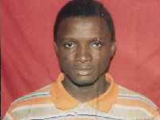

CURRICULUM VITAE
Identification

Prénom : Abdoulaye Barry
Date de Naissance : 27/10/1994 àConakry - Nationnalité : Guinéenne
Situation matrimoniale : Célibataire
Adresse : Enco-5/ Commune : Ratoma
Téléphone : 622 00 88 01/ 666 68 08 05
E-mail : abdallahbarryt5@gmail.com
Etudes et formations
DU 01 Août au 21 Septembre 2018 : Participation une a formation en Salforce
Du 01 Août- 10 Août 2018 : Formation professionnels en gestion associative
2012 - 2016 : MIAGE (Méthodes Informatiques Appliquées à la Gestion des Entreprises) - Université Mahatma Gandhi.
Diplôme obtenue : Licence Professionnelle / Analyse et Développement.
2011-2012 : Baccalauréat unique Science Mathématique - Complexe Scolaire Konrad Adenauer.
2008 - 2009 : Brevet d'étude du premier cycle - Complexe Scolaire Konrad Adenauer.
2004 - 2005 : Certificat d'étude primaire - Groupe Scolaire Famille Annexe.
Experience Professionnelle
De mai 2019 à nos jours : Chef de projet et en même temps Développeur d’une application de gestion pour une association.
01 janvier 2017 au 25 Décembre 2017 : Stagiaire à GIGA TECHNOLOGIE.
01 janvier - à juin 2018 :Analyste développeur à GIGA TECHNOLOGIE.
Vie Associative :
2015– 2017 : Président, Secrétaire Chargé à l'Information et à la Communication de l'Association de Jeunes pour l'Unité et la Renaissance (A.J.U.R).
2010– 2016 : Président, Secrétaire Général, Secrétaire Général à l'Information et à la Communication de l'Association des Elèves et Etudiants Musulmans de Guinée.
Connaissance en informatique
- Système d’exploitation :
- Microsoft Windows, MS-DOS, Linux
- Logiciels Bureautiques et Multimédia :
- Pack Office, Showbiz, Photoshop, GIMP, VPAD, WPAD, Sony Vegas Pro;
- Langage de Programmation :
- C/C++/C#, Visual Basic 6, Java Standard,vb.net, PHP, WINDEV, WINDEV Mobile, Ionic
- Système de Gestion de Base de données :
- Méthode et langage de Modélisation, langage de requêtes :
- Merise, algèbre Relationnel, SQL
- Réseau Informatique :
- Développement de site web :
- Avec le code dure(html/css), JavaScript, bootstrap, materialisecss, wordpress,
Langues
Etrangères : Français, Anglais et Arabe (moyen)
Nationale : Poular, Soussou